Blackbird
Ubiquitous on the moor and in the area. Their singing is distinctive
in the spring and summer. They become almost quiet in the autumn and winter,
when they only produce a slightly chirping sounds. The picture below
shows a young one. The second picture shows a
leucistic blackbird.
 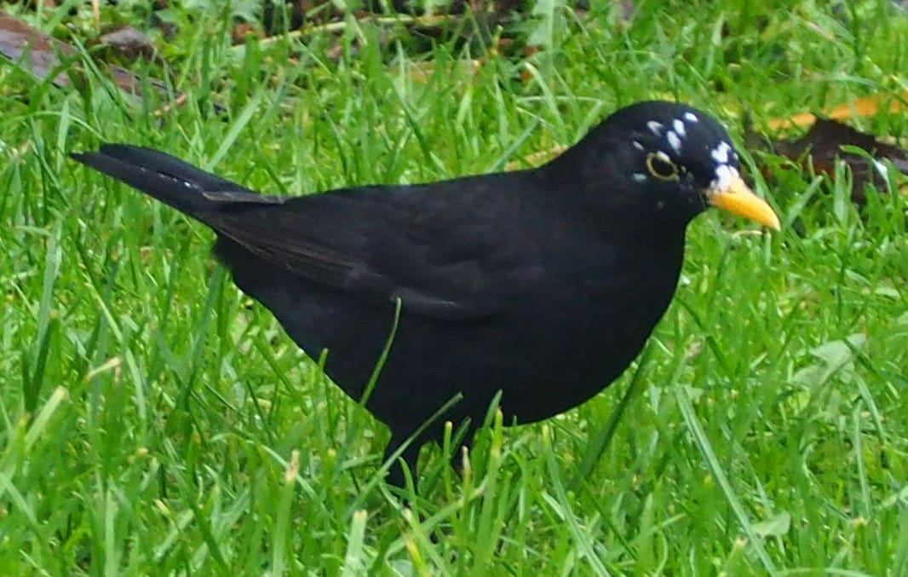
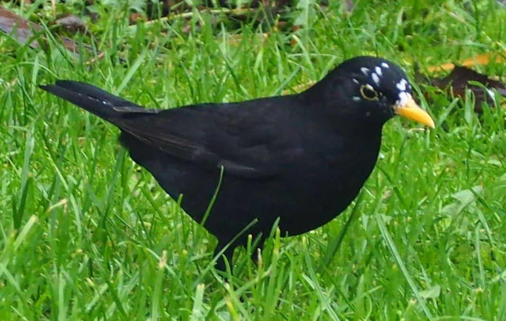
Blue tit
Very common on most parts of the moor.

Buzzard
I don't think they live on the moor but can be sometimes seen on the skies above.

Common chaffinch
The easiest place to see a chaffinch is the woodland between the moor
and the golf course. Either high on the spruces or on the bordering
whitebeams. Also, like most of the birds on the moor it can be seen
on the cotoneaster.
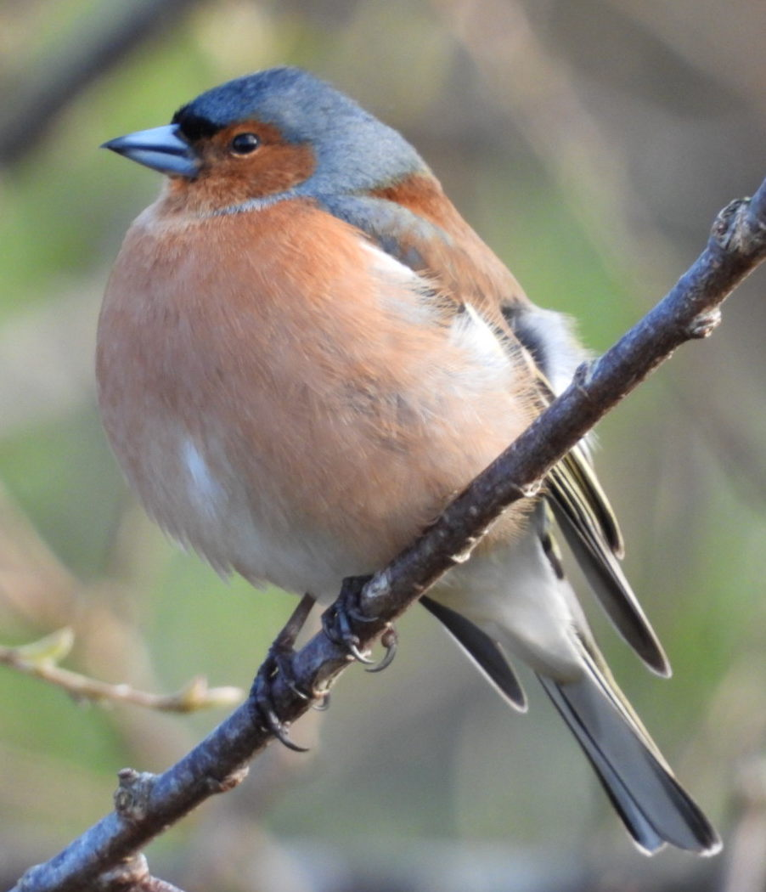
Dunnock
Resembling a small song thrush it is not so easy to spot. I am not even sure whether
it lives here or I was just lucky and saw it when it was passing by during its
migration.

European stonechat
To the best of my knowledge, a couple of stonechats were only visiting for a day
in October. The pictures below were taken on October 18, 2022 and this is the only
day I saw these beautiful birds. They were as easy to photograph as robins, showing
almost no fear even when I approached them very closely.


Geese
Not resident of the moor but can be spotted migrating. What always confused me in the autumn
was that many flocks of geese were heading North rather than South. One of the reasons is that
there may be geese coming here for winter from Norway. However, it is probably more complicated.
After a bit of investigating
I learned that before the actual migration the geese explore different feeding grounds and
that is why they are seen to fly in the "wrong" direction.
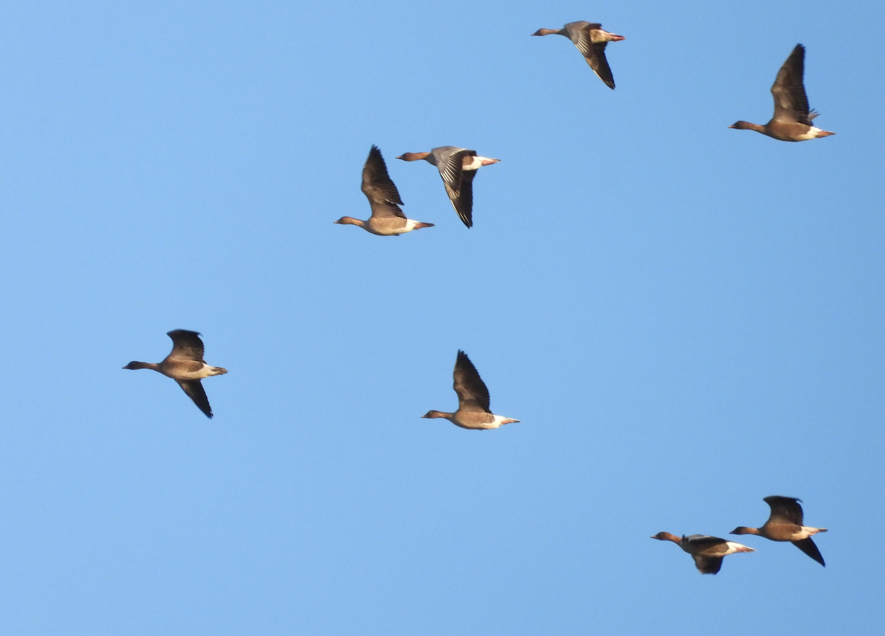
Goldcrest
What is the evolutionary benefit of having such a grumpy face? A goldcrest is restless small bird, the
size of a blue tit. It took me about twenty minutes to make just a few acceptable shots. It was not
bothered much by my presence, just jumping from one branch of gorse to another every second.
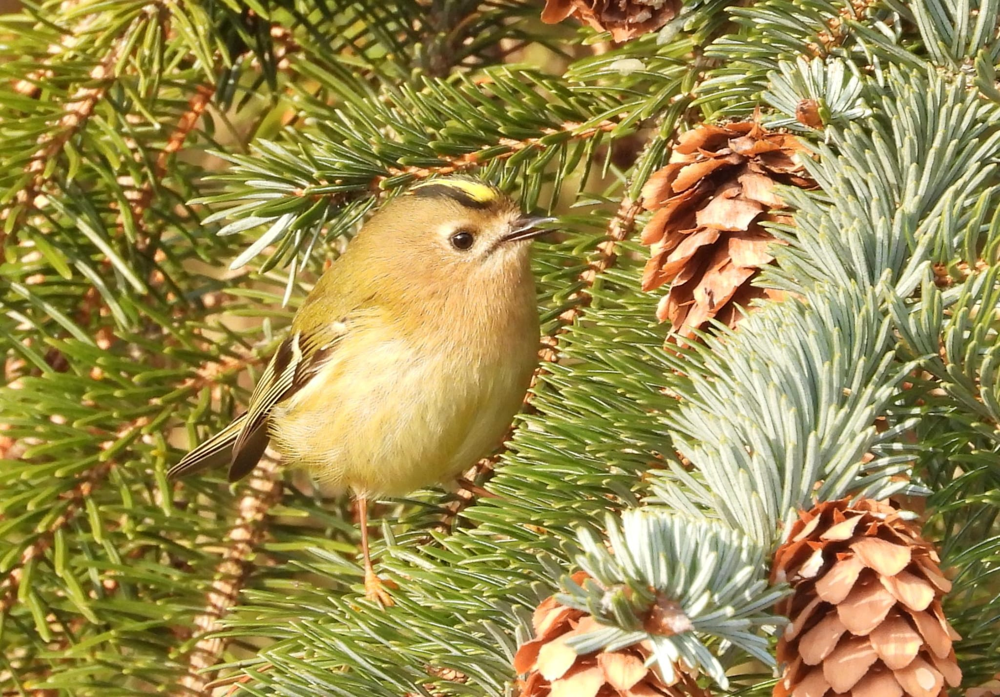
Goldfinch
One of the most beautiful birds on the moor. The easiest place to spot them are the
tops of spruces in the end of summer. Flocks of goldfinches feed on ripe cones (see
the last photo).
 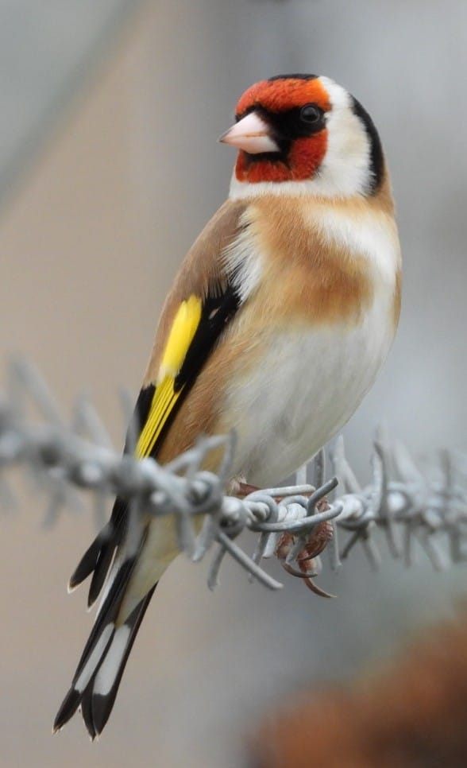
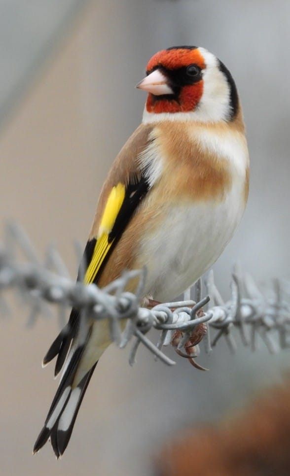

Great tit
A resident of the moor that is quite hard to photograph. The picture below was taken on the
feeder in my garden.

Kestrel
I am not sure kestrels nest on the moor, however, they hunt there
from time to time. Often being chased away by magpies or crows.

Magpie
Easy recognisable for they look and the distinctive cawing. They seem to be present on
the moor, especially in the higher parts of the spruces, almost all the time.
Surprisingly difficult to photograph.
 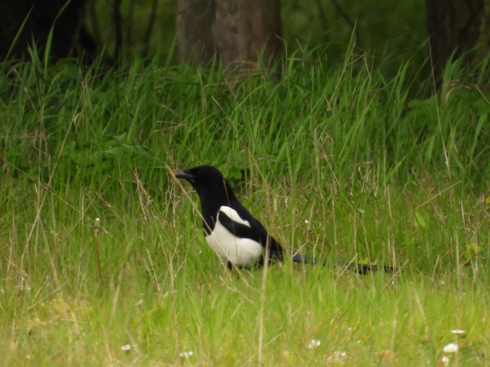
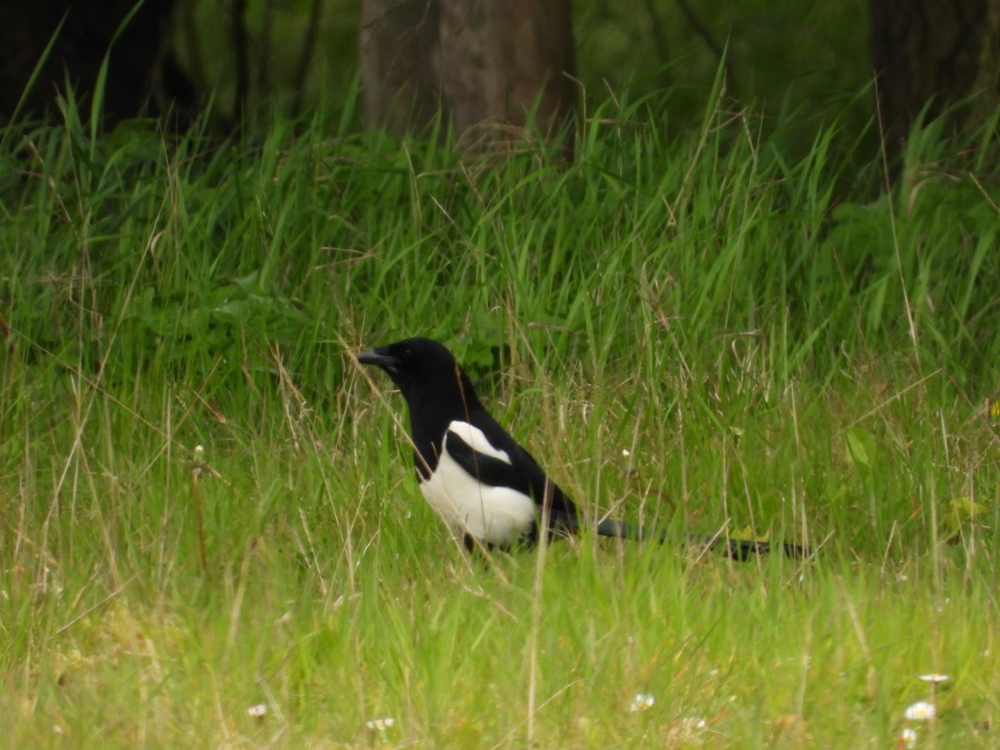
Mistle thrush
Actually, I am not sure whether this is a mistle thrush, not a song thrush. They are very hard
to tell apart (even the
instruction of the British Trust of Ornithology did not help me).
The one on the picture was less timid than usually song thrushes are and that is
why I suspect it may be a mistle.

Pheasant
Visitors from the golf course. The female on the photo was spotted in the woodland.
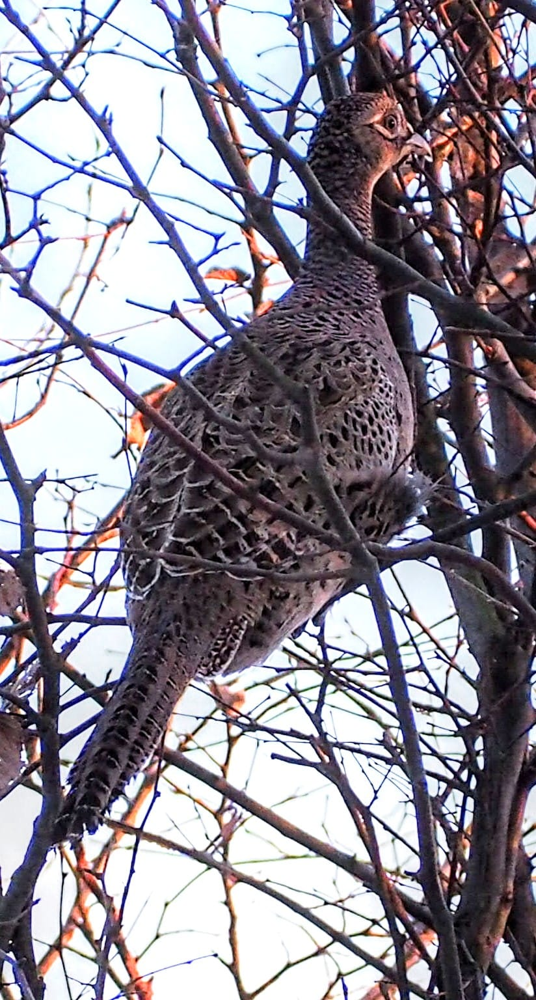
Pigeon
There are a few kinds of pigeons on the moor. The one on the picture below
is a wood pigeon and they nest high on the spruces. Earlier they attempted
to nest on the trees in the gardens adjacent to the moor but the presence
of cats chased them away to the woodland.

Redwing (near threatened)
A small bird of "near threatened" conservation status. Visits us mostly in winter, probably
from Norway. This year (2022) a large flock (see the third picture) arrived in
December and most of it stayed for three weeks. On arrival they were seen on
the moor and the trees on Corunna Road, while later mostly in the woodland
between the moor and the golf course.


Robin
A very common and iconic bird. They can be seen and heard everywhere on the moor. Quite
friendly to people, often come very close. On the other hand, aggressive towards other
small birds. They produce many different sounds, the most distinctive being something
between clicking or smacking. When you stand near the gorse you can hear it from many places
as robins call each other.


Rook
There are plenty of rooks living mostly in the woodland between the moor
and the golf course and in the trees along Corunna Road and further away.

Seagull
We don't really like them in Aberdeen. Nevertheless, then are present on the moor. They nest
on the roofs of houses on Donview on the southern edge of the moor. Not so frequent over the
moor as they used to be.

Song Thrush
The poetry of singing birds. Actually, I often confuse the singing of song thrushes with that
of blackbirds.


Sparrow
The bird on the picture is a house sparrow. I suspect that there may also be tree sparrows on the moor,
but I haven't yet verify it. I only recently learned about the latter species and it is interesting
to know whether they live on the moor.

Treecreeper
As the name suggest this small bird creeps up the trees. In search of food under the folds
of the bark it climb up a tree, then flies down and repeats the climbing. Not shy at all
it is a pleasure to watch from a relatively close distance.


Water rail
Quite rare in this part of Scotland. A few birds (I saw three) visited the moor in November and
stayed for a few days. As the name suggests its natural habitats are banks of rivers and lakes,
that makes it an uncommon visitor. Walks in search for food and when scared runs with the head
down. That is why initially I thought it was a wounded song thrush.
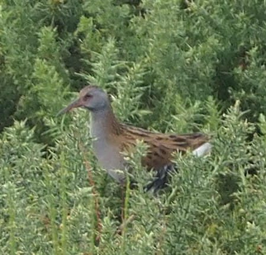
Whitethroat
Yet another small bird contributing to the symphony of the moor.

Wren
Very common tiny inhabitant of the moor. Easily seen in the winter months. Just stand in the gorse
and within a few minutes either a wren or a robin will pop up on a top branch not far from you.
You will hear them before they make themselves visible.
 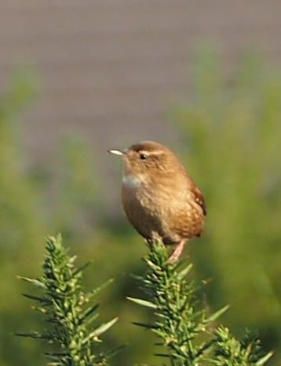
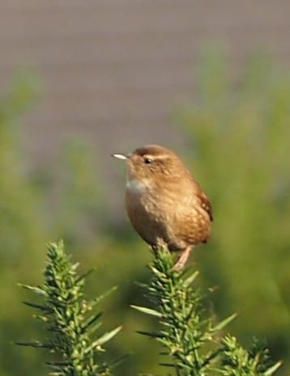
Yellowhammer
I saw this bird just once on the 3rd of August 2022. The picture I took was not good and I
forgot about it. A few months later, when revised the collection of photographs, I realised
it was a yellowhammer. The pictures below were enhanced to emphasise the characteristic features.
 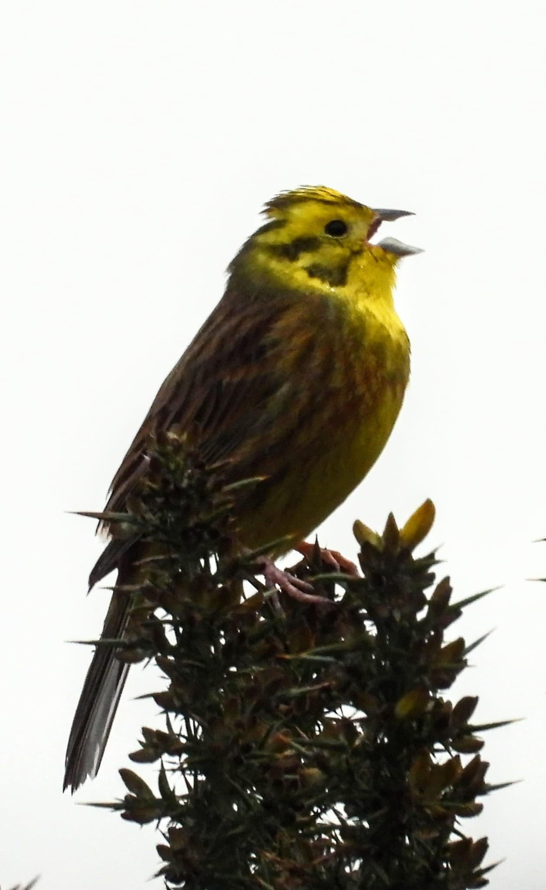
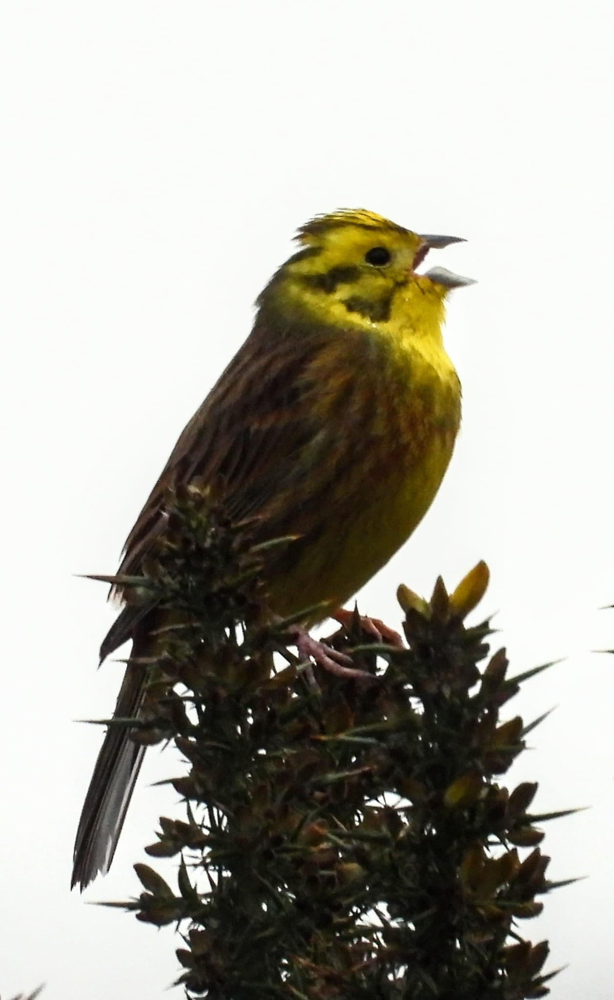

{kind=link}
{kind=link}
{kind=link}
{kind=link}
{kind=link}
{kind=link}
{kind=link}
{kind=link}
{kind=link}
{kind=link}